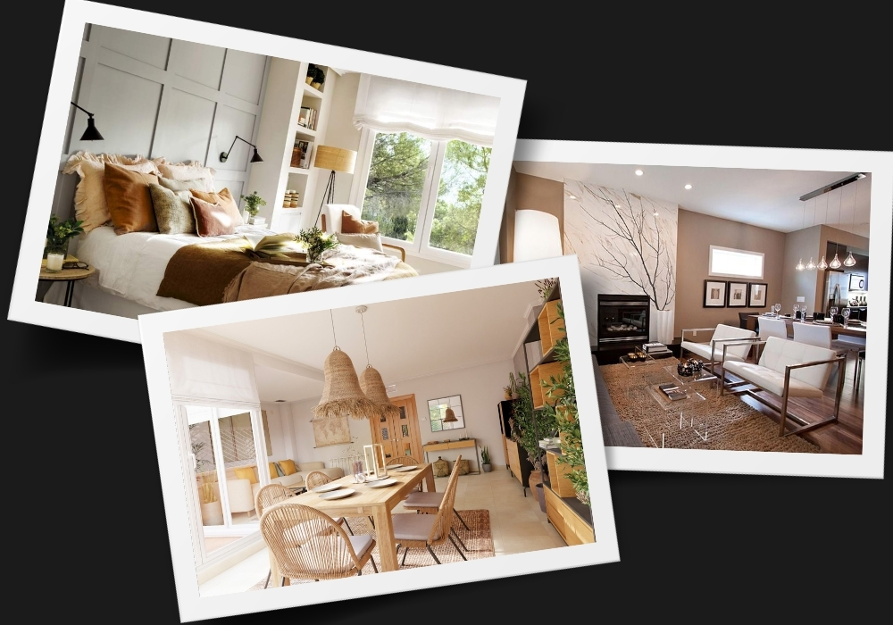
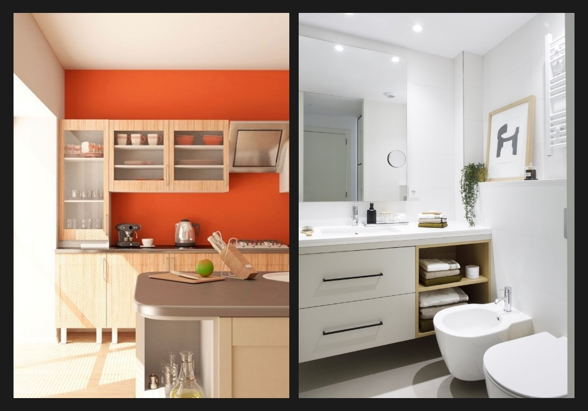
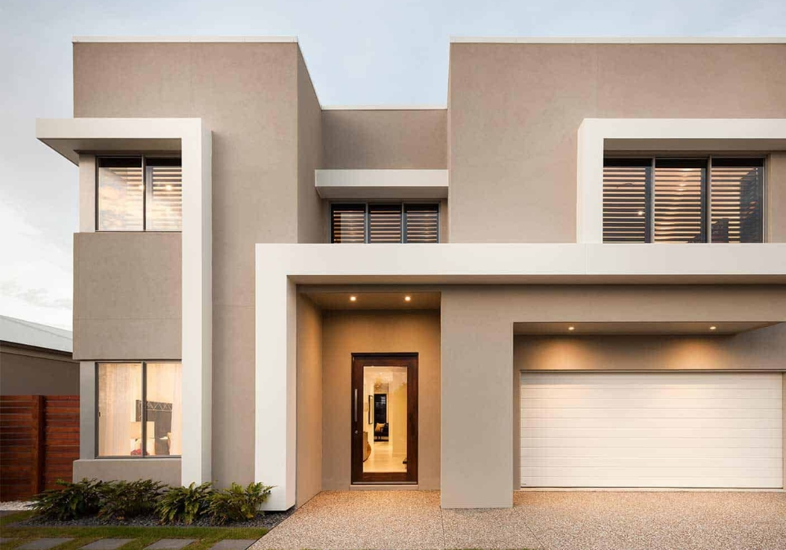
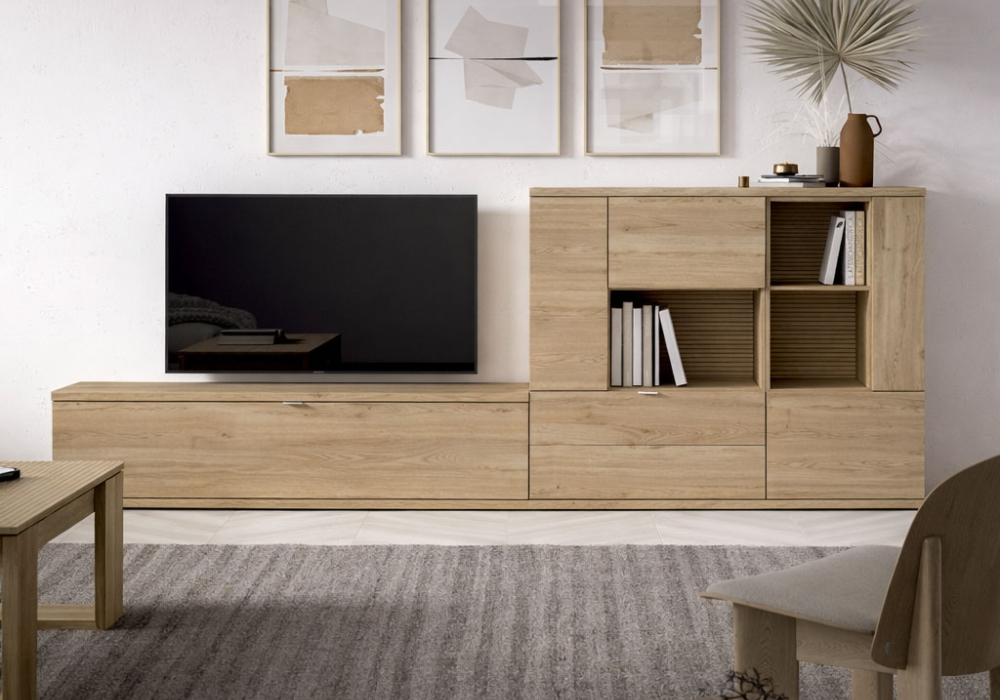

Copyright © . All Rights Reserved. — Designed by Lucas Conti

Estos ambientes conviven con la grasa, el vapor y la humedad constante. Nunca uses un látex común aquí, ya que se descascarará o generará hongos rápidamente.


La intemperie es el enemigo número uno de las paredes. El sol, la lluvia y los cambios de temperatura agrietan las superficies.
Para proteger y dar color a estas superficies, los látex no sirven. Necesitamos productos de alta adherencia y dureza.

"El 70% del éxito de un trabajo está en la preparación previa. No importa si usás la mejor pintura de Alba o Plavicon: si la pared tiene polvo, humedad o pintura descascarada, el producto fallará. Lijar, limpiar y aplicar el fijador adecuado es obligatorio."
En nuestro local encontrás todo el catálogo completo de estas marcas y el asesoramiento técnico que tu obra necesita.
Consultar a un asesorCopyright © . All Rights Reserved. — Designed by Lucas Conti